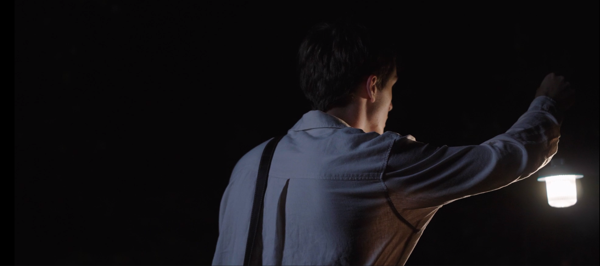
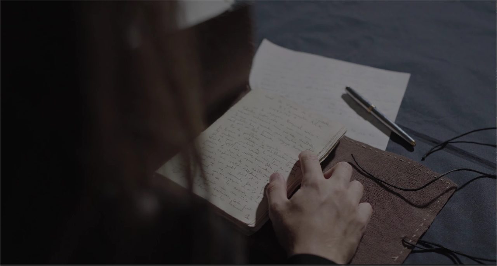

Tribulations d'un voyageur temporel
Projet personnel de l'été 2025
Avec un ami à moi en formation d'audiovisuel, nous voulions nous entraîner à réaliser des courts-métrages en
dehors des cours.
Nous avons donc réalisé durant les mois de juillet et août 2025, un court- métrage de type
«Bande-annonce» sur le livre d’un ami qui observait le projet : Tribulation d’un
voyageur temporel.
J’ai réalisé ce projet en groupe du début à la fin avec des amis qui, pour la plupart ne connaissait rien en
audiovisuel.
Compétences développés :
- Script
- Storyboard
- Direction
- Cadrage

